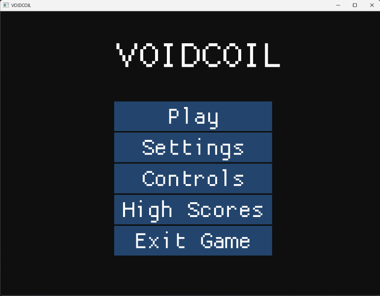
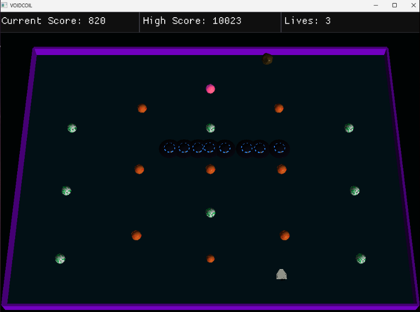
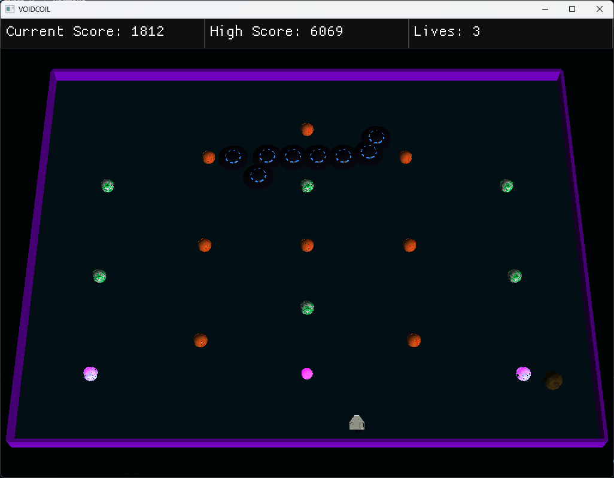
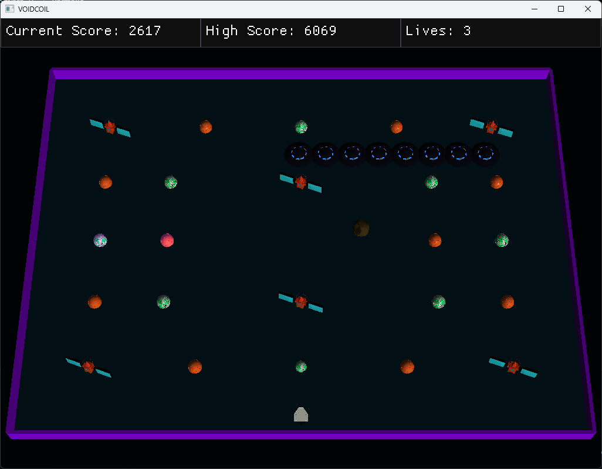
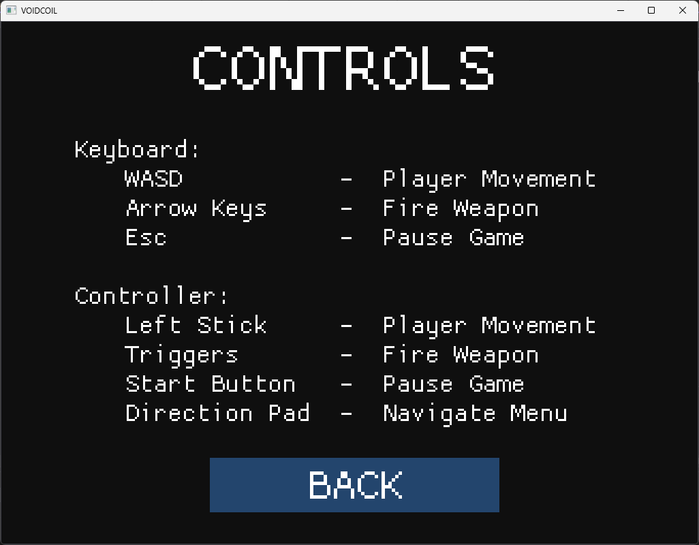
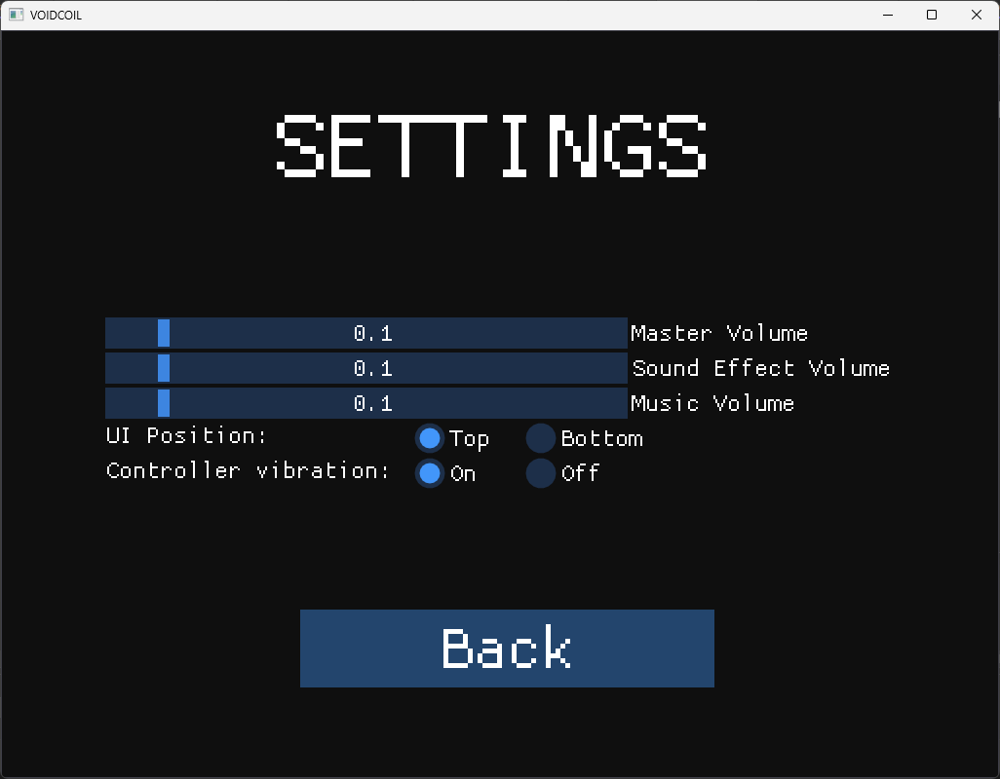

Game Developer | Unreal Engine | C++ | Unity | C#






A fast-paced, arcade-style shooter inspired by Centipede Chaos, this space-themed game challenges players to destroy a segmented enemy known as the Voidcoil as it snakes down the screen while navigating around obstacles. Players earn points by eliminating enemies—including astronauts and asteroids—and destroying environmental hazards like planets and satellites. Across three progressively challenging levels, the ultimate goal is to fully eliminate the Voidcoil while maximizing score and survival.